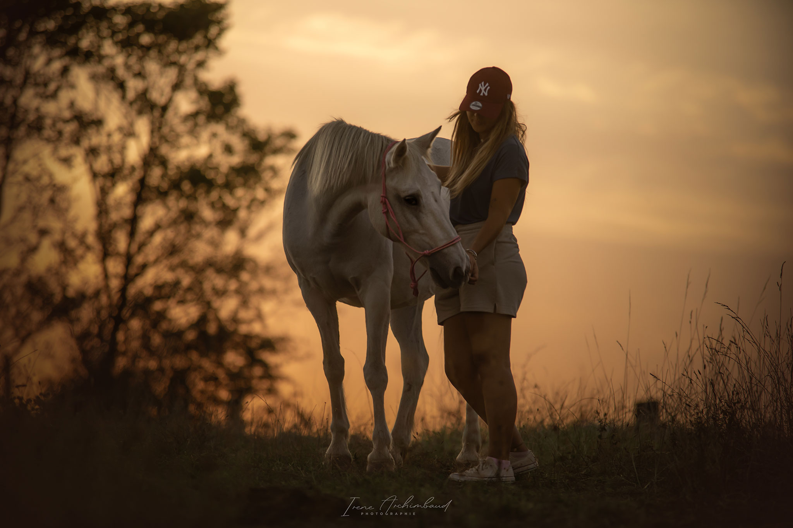
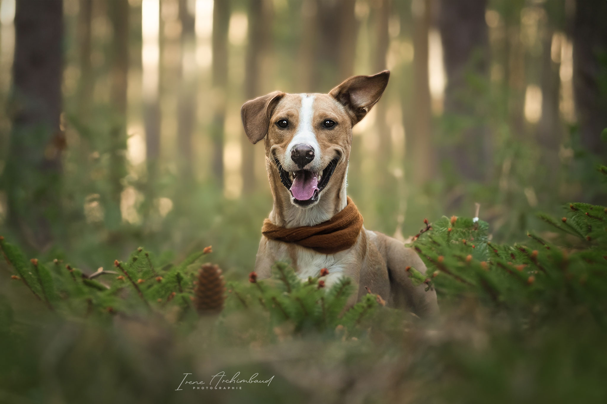
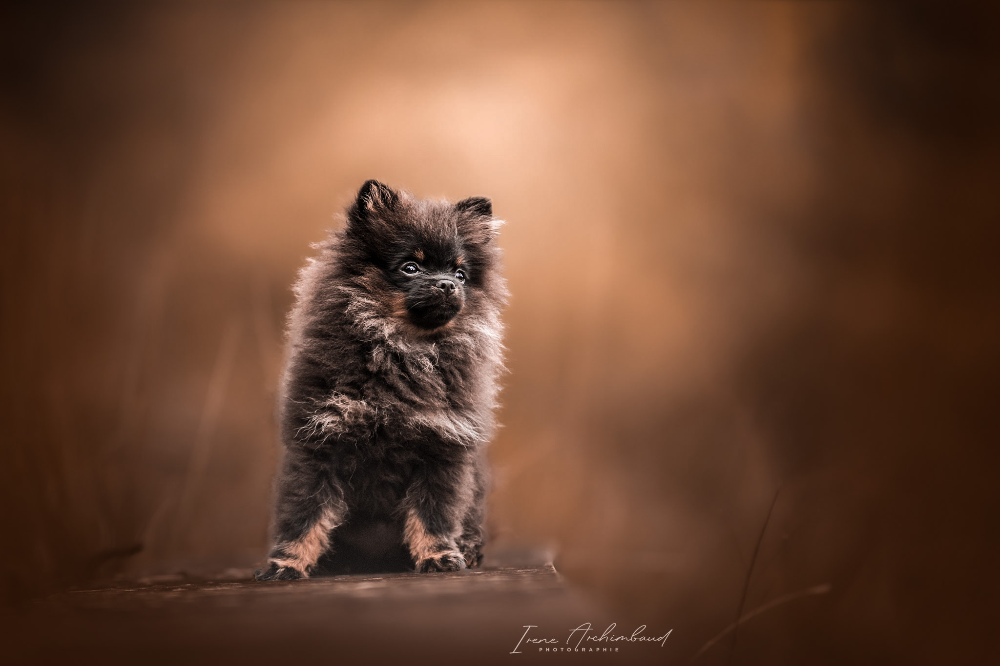
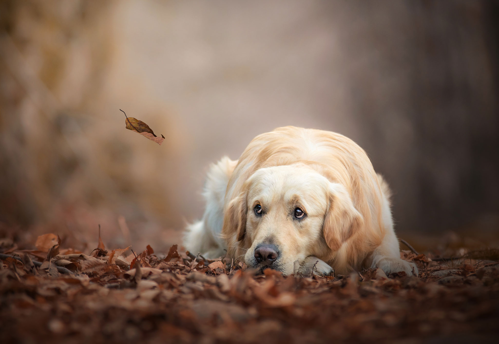
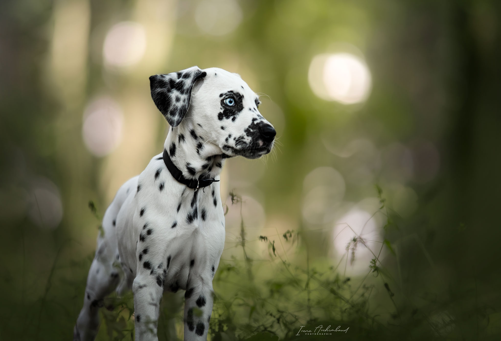
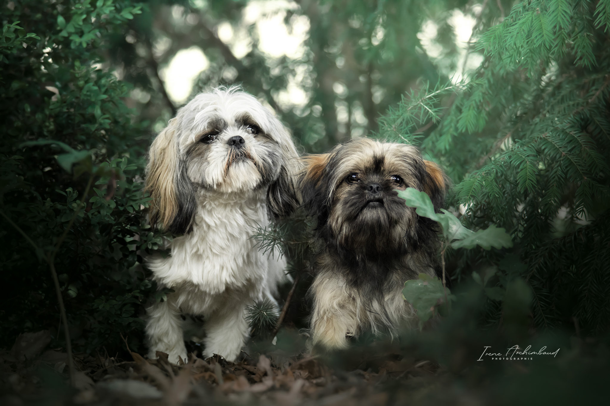
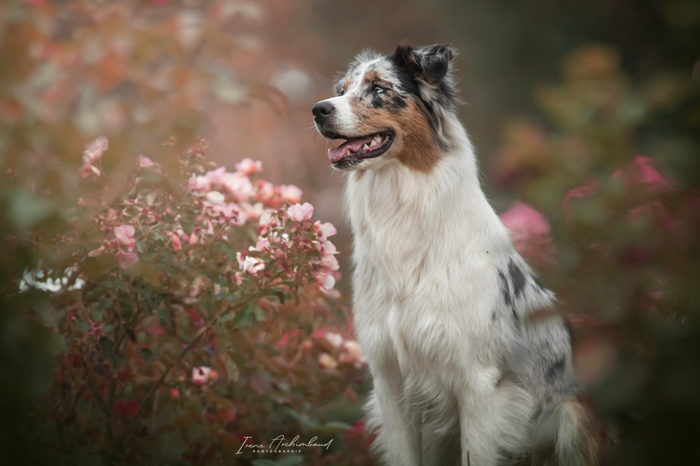
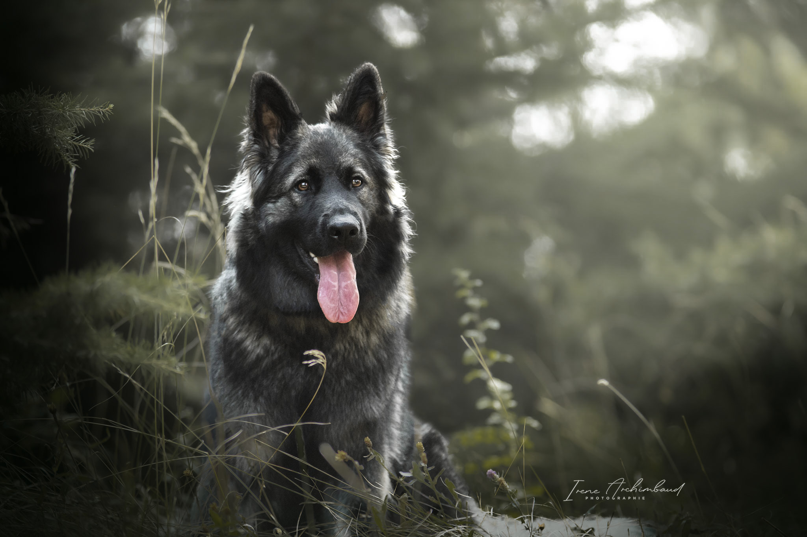
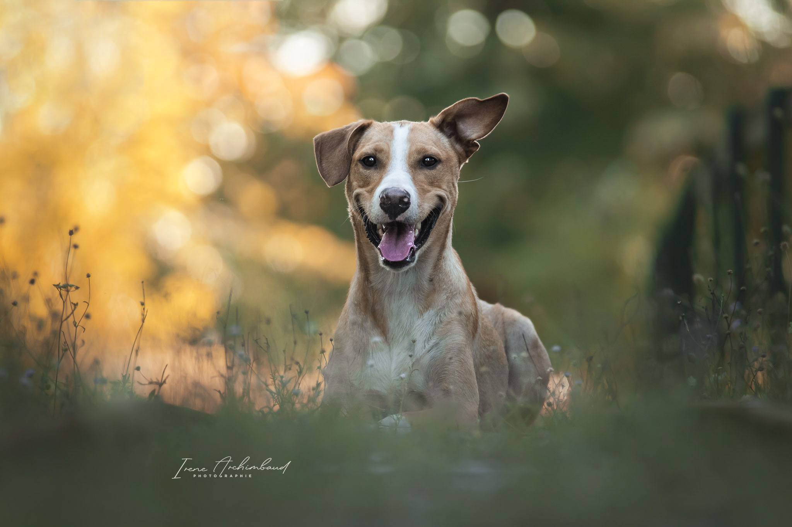
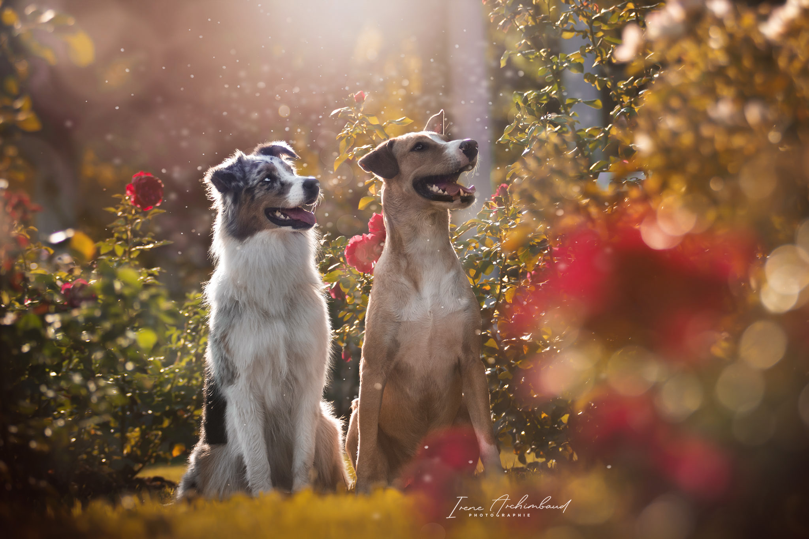

ACCUEIL
PORTFOLLIO
TARIFS
CONTACT
A PROPOS
ACCUEIL
PORTFOLLIO
TARIFS
CONTACT
A PROPOS
Photographe Animalier à Lyon - Spécialisée canin & équin
Irène Archimbaud Photographie
Des moments inoubliables,
pour vous, pour lui...









